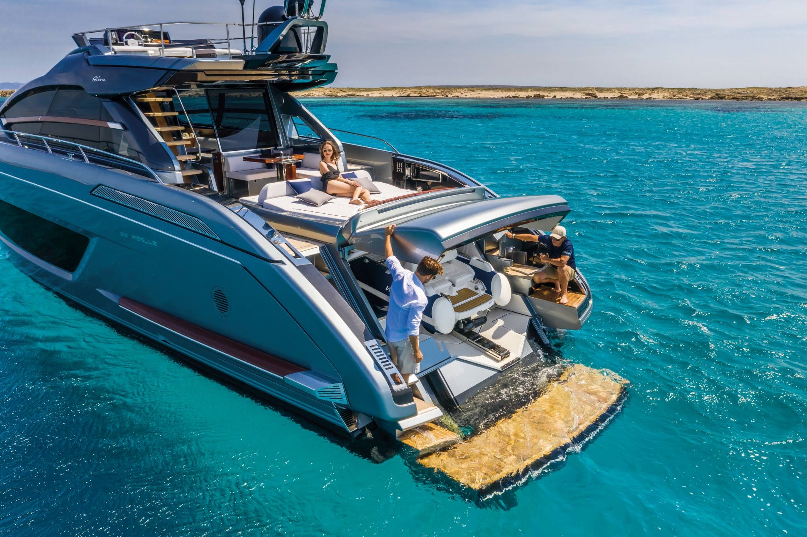

Santa Eulalia Boat Show 2024
Hosted in Ibiza, 18.04.2024 to 21.04.2024
A Showcase of Maritime Excellence
This year, the marina of Santa Eulalia, Ibiza, will once again host the Boat Show from April 18th to 21st, 2024. With a friendly atmosphere and stunning location, the show promises to be a good event for yachting enthusiasts and industry professionals from around the Balearics and beyond.
Exhibition and Innovations

The Santa Eulalia Boat Show 2024 will be showcased by a group of local exhibitors and companies where will be presenting luxury yachts, sailing boats, and innovative marine technology.
Cultural Celebrations and Networking
This year's exhibition organised with the support of PIMEEF and Santa Eulària des Riu Town Council will cover a range of topics, including sustainable boating practices, technological advancements in yacht design, and market trends. Visitors can also enjoy the local culture with gourmet food stalls, live music, and entertainment that celebrate the unique heritage of Ibiza. The combination of professional opportunities and a festive atmosphere makes the Santa Eulalia Boat Show a must-visit event on the maritime calendar.
Engage and Connect

Whether you're a seasoned sailor, a marine industry professional, or a yacht enthusiast, the Santa Eulalia Boat Show 2024 is the perfect place to indulge your passion for the sea and connect with like-minded individuals. Mark your calendars and prepare for an unforgettable experience!